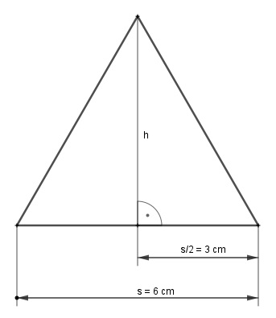
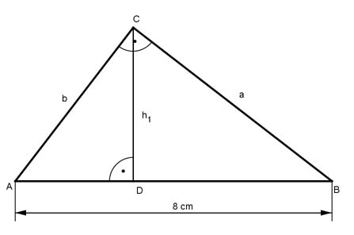

Pythagoras Aufgabe 38 In welchem Verhältnis stehen die Katheten eines rechtwinkligen Dreiecks, das die gleiche Fläche wie ein gleichseitiges Dreieck hat, wenn seine Hypotenuse 8 cm und die Seite s des gleichseitigen Dreiecks 6 cm lang ist?  Im gleichseitigen Dreieck gilt: s² = (s/2)² + h² | - (s/2)² h² = s² - (s/2)² h² = 6² - 3² = 27 cm² |√ h = 5,2 cm s * h A = ------- 2 6 cm * 5,2 cm A = --------------- = 15,6 cm² 2  Wegen Flächengleichheit gilt für das rechtwinklige Dreieck: AB = c AB * h1 A = ---------- 2 8 * h1 15,6 = -------- |*2 2 31,2 = 8 * h1 |:8 h1 = 3,9 cm c = p + q | -q p = c - q p = 8 - q Höhensatz: h² = q * p h² = q * (8 - q) 15,2 = 8q - q² |+q² q² + 15,2 = 8q | -8q q² - 8q + 15,2= 0 p, q - Formel p = -8, q = 15,2 - 8 q1,2 = - ---- 2 q1,2 = q1,2 = q1,2 = 4± 0,9 q1 = 4,9 cm (q2 = 3,1 cm) p1 = 8 - 4,9 = 3,1 cm und (p2 = 8 – 3,1 = 4,9 cm) Kathetensatz: a² = c * p1 = 8 cm * 3,1 cm = 24,8 cm² |√ a = 5 cm b² = c * q1 = 8 * 4,9 = 39,2 cm² |√ b = 6,26 cm a 5 0,8 8 --- = ------ = ----- = ---- b 6,26 1 10 oder Kathetensatz: a² = c * p2 = 8 cm * 4,9 cm = 39,2 cm² |√ a = 6,26 cm b² = c * q2 = 8 * 3,1 = 24,8 cm² |√ b = 5 cm a 6,26 1 10 --- = ------ = ----- = ---- b 5 0,8 8